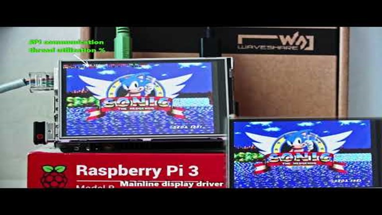
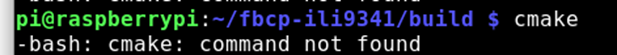
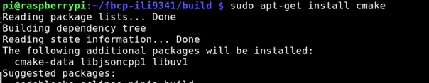
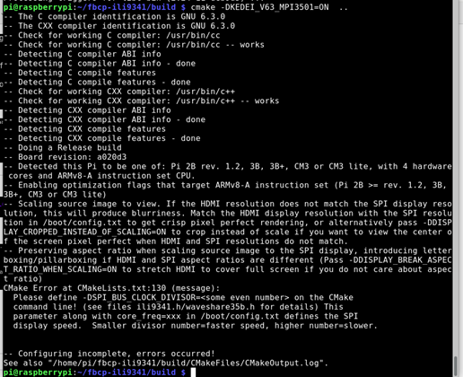
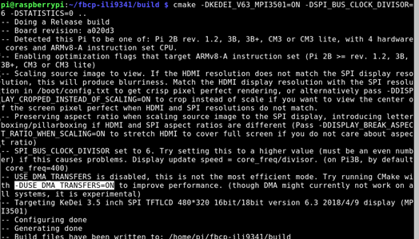
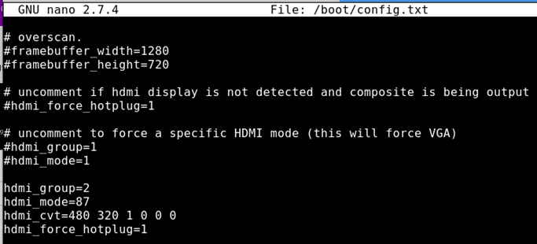

SPI fast Display library is good, KEDEI 3.5 is Garbage.
December 19, 2018
Video notes for SPI display install on a raspberry pi, “liveblog” style.
A bit lengthy due to my preferred editing style (none).
Part 1 is riddled with typos and ends with some frustration.
Part 2 is a roller coaster of excitement, but more importantly, many lessons learned.
Part 3 has some feedback from the author of the library, squirrels, I do some singing, and a conclusion.
Please see my videos for context, but basically the Kedei display is garbage, buy an adafruit or waveshare.
The linked library by juj is AMAZING, and when used with those waveshare or adafruit spi displays, you can achieve very fast frame rates.
| Pinouts | |
| Pi stacked |
| SPI display | |
| “Juj”‘s Example video | fbcp-ili9341 ported to ILI9486 WaveShare 3.5″ (B) SpotPear 320×480 SPI display |

| Library | https://github.com/juj/fbcp-ili9341 |
| Instructions | Use raspi-config to configure raspbery pi |
- Enable ssh
Find out ip address ussing “ip address”
Ssh to the rpi | | | | --- | --- | | Ssh pi@192.168.1.51 | | | Assuming stock, no changes to /boot/config.txt |
If needed, would need to disable dtoverlay or dtparam lines with the # || Cat /boot/config.txt | Scroll down… Looks good | | Build and run: |
git clone https://github.com/juj/fbcp-ili9341.git
cd fbcp-ili9341
mkdir build
cd build
cmake [options] ..
make -j
sudo ./fbcp-ili9341 *Replace [options] with the appropriate display type. |
Make sure you have cmake!

If not
Sudo apt-get install cmake

Then run again
cmake -DKEDEI_V63_MPI3501=ON ..

Errors!
Missing display speed
-DSPI_BUS_CLOCK_DIVISOR=6
So
cmake -DKEDEI_V63_MPI3501=ON -DSPI_BUS_CLOCK_DIVISOR=6 -DSTATISTICS=0 ..

| | Possibly add -DUSE_DMA_TRANSFERS=ON cmake -DKEDEI_V63_MPI3501=ON -DSPI_BUS_CLOCK_DIVISOR=6 -DSTATISTICS=0 -DUSE_DMA_TRANSFERS=ON .. Result: no change to white screen cmake -DKEDEI_V63_MPI3501=ON -DSPI_BUS_CLOCK_DIVISOR=30 .. | | Make -j | | | Run it | No dice? | | Auto load on statups | sudo /home/pi/fbcp-ili9341/build/fbcp-ili9341 & | | Some notes on rc.local https://www.raspberrypi.org/documentation/linux/usage/rc-local.md Use & to split Use full path naems not relative | Edit /etc/rc.local and add |
sudo nano /etc/rc.local
sudo /home/pi/fbcp-ili9341/build/fbcp-ili9341 &
And that should go before the exit 0
As so
Edit the hdmi size settings in
boot/config.txt
Don’t forget the refresh rate!
Using
Sudo nano /boot/config.txt
Notes on config.txt
Rpf.io/config
Notes on custom HDMI_MODE=87
https://www.raspberrypi.org/forums/viewtopic.php?f=29&t=24679
hdmi_group=2
hdmi_mode=87
hdmi_cvt=480 320 60 1 0 0 0
hdmi_force_hotplug=1

Could this be helpful?”What I generally do to debug is connect to the Pi via SSH and run watch -n 0.1 gpio -g readallto observe what the IN/OUT and HIGH/LOW status of each GPIO register is, and cross reference the schematics of the display to see if the reset line is as needed.” – https://github.com/juj/fbcp-ili9341/issues/3Conclusion”The KeDei v6.3 display with MPI3501 controller takes the crown of being horrible.”
| Can we try the alt git tree? No, not for this one. Details https://stackoverflow.com/questions/7832770/how-to-get-certain-commit-from-github-project/33345534 | https://github.com/juj/fbcp-ili9341/commit/4c9229037e923e8f1b866afbcb79b556bf808c4f | ||
| Command to try other tree. | Git checkout 4c9229037e923e8f1b866afbcb79b556bf808c4f | ||
| Result: | Would not compile. |